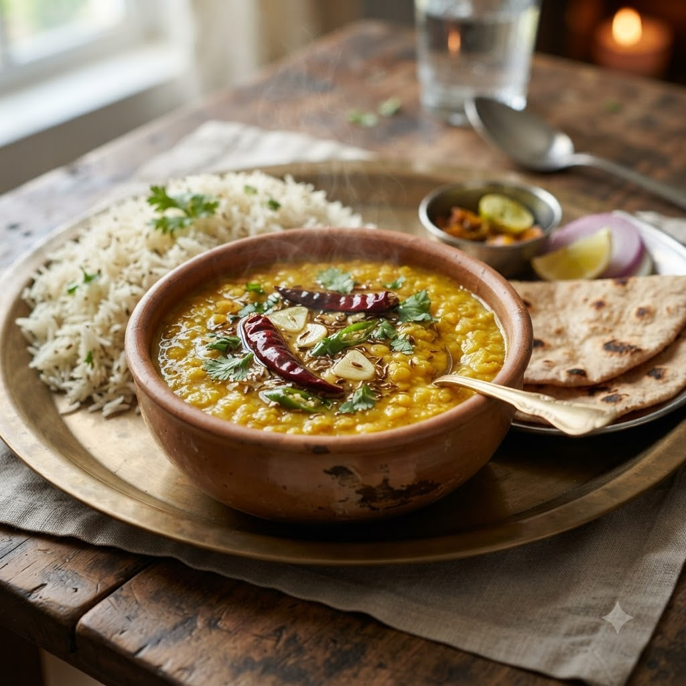

Dal Tadka

Dal Tadka
Chef Magic – Sauté + Boil Auto 28 min — Serves 4
Prep ahead: Wash the dal well; soaking for 18 minutes will shorten the boiling time.
Ingredients
- 1 cup toor dal, washed
- 3 cups water
- 1/2 tsp turmeric (haldi)
- 1 tomato, chopped
- 1 onion, chopped
- 1 tsp cumin seeds (jeera)
- 2 cloves garlic (lehsun), chopped
- 1 tbsp ghee/oil
- Salt to taste
- Chopped coriander (dhania) for garnish
Method
1Add dal, water, turmeric and salt to the jar; select Boil (Speed 1–2, 100°C) and cook until soft.
2Drain if needed and set the cooked dal aside in a bowl.
3Add ghee, cumin, garlic and onion to the jar; select Sauté (Speed 2–4, ~130–160°C) until golden.
4Add the tomato and sauté until soft, then stir the cooked dal back in and simmer 4 minutes. Garnish with coriander.